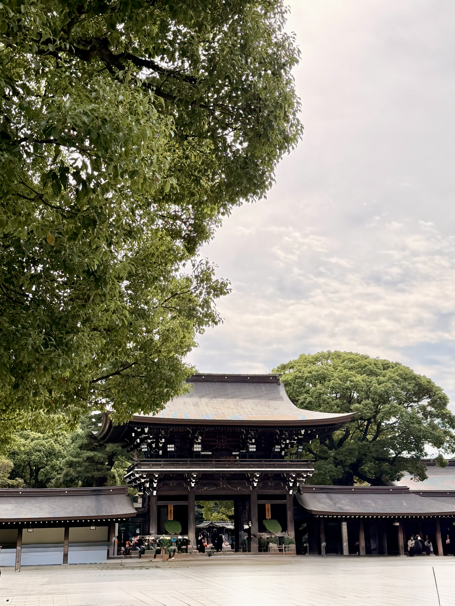

Featured
Journeys

INDONESIA
Borobudur
Witness sunrise over the world's largest Buddhist temple as mist drifts across the Kedu Plain. A place where history, spirituality and extraordinary architecture combine to create one of Asia's most unforgettable experiences.
Read the Journey →
INDONESIA
Komodo Islands
Sail between dramatic volcanic islands, discover secluded beaches and experience one of the world's last truly wild marine environments in the heart of the Indonesian archipelago.
Read the Journey →
HONG KONG
Hong Kong
A city where towering skylines, vibrant markets and world-class dining create one of Asia's most exciting urban destinations.
Read the Journey →
CAMBODIA
Angkor
Explore magnificent temples reclaimed by the jungle and discover one of the greatest archaeological sites ever constructed.
Read the Journey →
JAPAN
Japan
From Tokyo's electric streets to the iconic beauty of Mount Fuji, discover a country where ancient traditions and modern life exist side by side.
Read the Journey →About
The Expat Edits
The Expat Edits is a curated collection of destinations, luxury hotels, remarkable restaurants and unforgettable experiences from around the world. Built around original photography, each journey captures places worth discovering rather than simply visiting.